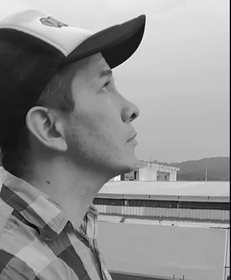

Summary

Quien soy?
Hola! soy Luis Fernando un aapasionado profesional orientado a la innovacion y el progreso real.
Educacion
Universidad Utel
Licenciatura en Administracion de Tecnologias de Informacion
2016 - 2020, Ciudad de Mexico, Mexico
Experiencia Laboral
Banco Banorte - Analista Transaccional Postvta
2005 - 2009
Descripcion de actividades:
Me dedicaba a hacer todo lo de la oficina y tenia como peleles a otros 10 simios preguntandome todo lo que ellos tenian que ahcer de diferentes areas.Cafune Corps - Analista de datos
2004 - 2005
Descripcion de actividades:
Mis funciones eran las de recolectar, limpiar, analizar datos y convertirlos en informacion relevantes para la toma de decisiones de la empresa.iShop Mixup - Genius
2002 - 2003
Descripcion de actividades:
Me dedicaba a solucionar problemas de equipos Apple.
Habilidades
- Analisis de datos
- Trabajo en equipo
- Oler bonito
- Oler a crudo, mas preciso tequila con vodka con un toque de limon
- Python
Premios y certificaciones
- Certificacion Python
- Certificacion analisis de datos IBM
Contacto
Mis Hobbies Contactame